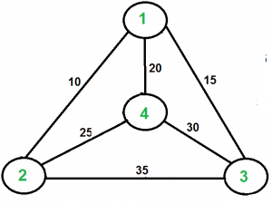

Travelling Sales Problem | Dynamic Programing
Problem Statement : Given a set of Cities , find the shortest possible route that visits every city exactly once and returns to the starting point.
Travelling Sum Problem | Dynamic Programing
Travelling Salesman Problem (TSP): Given a set of cities and distance between every pair of cities, the problem is to find the shortest possible route that visits every city exactly once and returns to the starting point.
Note the difference between Hamiltonian Cycle and TSP. The Hamiltoninan cycle problem is to find if there exist a tour that visits every city exactly once. Here we know that Hamiltonian Tour exists (because the graph is complete) and in fact many such tours exist, the problem is to find a minimum weight Hamiltonian Cycle.
For example, consider the graph shown in figure on right side. A TSP tour in the graph is 1-2-4-3-1. The cost of the tour is 10+25+30+15 which is 80.
The problem is a famous NP hard problem. There is no polynomial time know solution for this problem.
Following are different solutions for the traveling salesman problem.
Naive Solution: 1) Consider city 1 as the starting and ending point. 2) Generate all (n-1)! Permutations of cities. 3) Calculate cost of every permutation and keep track of minimum cost permutation. 4) Return the permutation with minimum cost.
Time Complexity: Θ(n!)
Dynamic Programming:
Let the given set of vertices be {1, 2, 3, 4,….n}. Let us consider 1 as starting and ending point of output. For every other vertex i (other than 1), we find the minimum cost path with 1 as the starting point, i as the ending point and all vertices appearing exactly once. Let the cost of this path be cost(i), the cost of corresponding Cycle would be cost(i) + dist(i, 1) where dist(i, 1) is the distance from i to 1. Finally, we return the minimum of all [cost(i) + dist(i, 1)] values. This looks simple so far. Now the question is how to get cost(i)?
To calculate cost(i) using Dynamic Programming, we need to have some recursive relation in terms of sub-problems. Let us define a term C(S, i) be the cost of the minimum cost path visiting each vertex in set S exactly once, starting at 1 and ending at i.
We start with all subsets of size 2 and calculate C(S, i) for all subsets where S is the subset, then we calculate C(S, i) for all subsets S of size 3 and so on. Note that 1 must be present in every subset.
 A TSP tour in the graph is 1-2-4-3-1. The cost of the tour is 10+25+30+15 which is 80.
For a set of size n, we consider n-2 subsets each of size n-1 such that all subsets don’t have nth in them. Using the above recurrence relation, we can write dynamic programming based solution. There are at most O(n*2n) subproblems, and each one takes linear time to solve. The total running time is therefore O(n2*2n). The time complexity is much less than O(n!), but still exponential. Space required is also exponential. So this approach is also infeasible even for slightly higher number of vertices.
Algorithm
If size of S is 2, then S must be {1, i},
C(S, i) = dist(1, i)
Else if size of S is greater than 2.
C(S, i) = min { C(S-{i}, j) + dis(j, i)} where j belongs to S, j != i and j != 1.